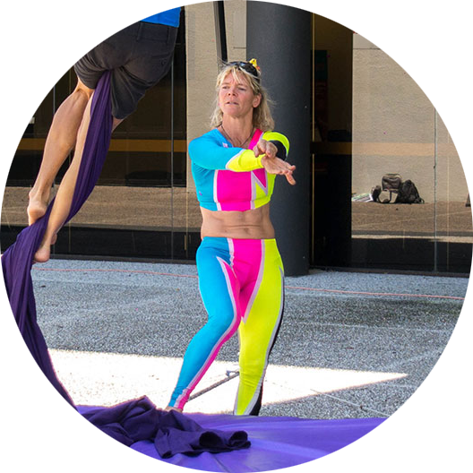

About

My name is Corinne Kempter and I've always enjoyed fun exercises. I learned aerial circus 8 years ago, I knew that that is one of the funnest ways to keep fit. Following some circus coaching courses in Melbourne, I opened Skyfall Silks to share my passion of aerial circus and skills in form of workshops.